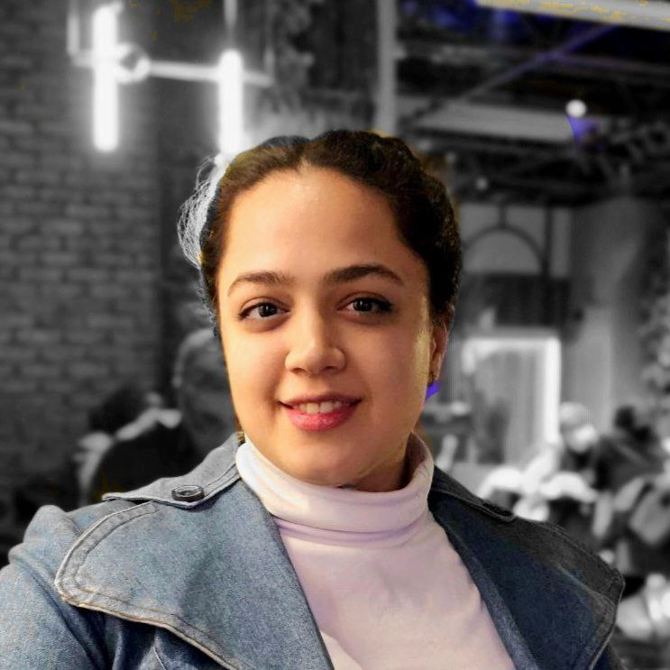

AI Developer & AI Educator • LLMs • RAG • IB PYP • Yerevan, Armenia
توسعهدهنده هوش مصنوعی و مدرس • مدلهای زبانی • RAG • IB PYP • ایروان، ارمنستان
I build practical AI products focused on LLM applications, including chatbots, Retrieval-Augmented Generation systems, and backend APIs in Python and FastAPI. I also work in international education, combining AI, programming, and inquiry-based learning.
روی توسعه محصولات کاربردی هوش مصنوعی با تمرکز بر مدلهای زبانی، چتباتها، سیستمهای RAG و بکاند با Python و FastAPI کار میکنم. همچنین در حوزه آموزش بینالمللی فعالیت دارم و هوش مصنوعی، برنامهنویسی و یادگیری پژوهشمحور را ترکیب میکنم.
Recently, I have focused on LLM-powered systems, prompt-engineered agents, semantic search over documents, and AI-assisted learning experiences.
اخیراً روی سیستمهای مبتنی بر LLM، ایجنتهای مبتنی بر پرامپت، جستجوی معنایی روی اسناد و تجربههای آموزشی مبتنی بر هوش مصنوعی کار کردهام.
I work at the intersection of artificial intelligence and education, designing learning experiences that introduce students to AI, programming, and design thinking.
در نقطه اتصال هوش مصنوعی و آموزش فعالیت میکنم و تجربههای یادگیری طراحی میکنم که دانشآموزان را با هوش مصنوعی، برنامهنویسی و تفکر طراحی آشنا میکند.
Designed and deployed RAG and Graph-RAG pipelines for semantic search over PDF documents, improving answer grounding and retrieval relevance.
طراحی و پیادهسازی پایپلاینهای RAG و Graph-RAG برای جستجوی معنایی روی PDF و بهبود دقت بازیابی و پاسخدهی.
Built a chatbot to rewrite and standardize user feedback, reducing manual review time by over 50%.
ساخت چتبات برای بازنویسی و استانداردسازی بازخورد کاربران که زمان بررسی دستی را بیش از ۵۰٪ کاهش داد.
Integrated multiple LLM providers into web applications to enable flexible responses and improved task handling.
اتصال چند ارائهدهنده LLM به وباپلیکیشنها برای پاسخدهی منعطفتر و مدیریت بهتر وظایف.